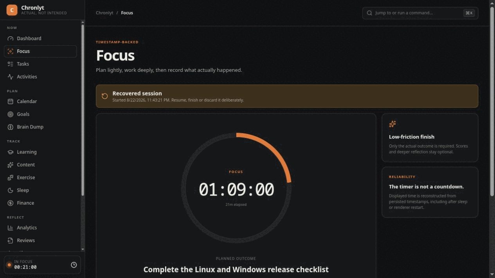
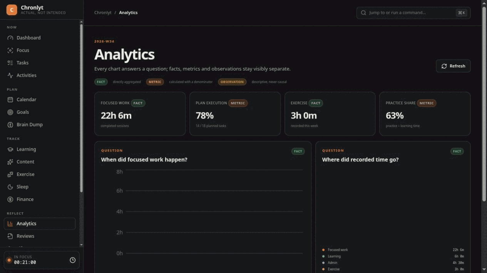
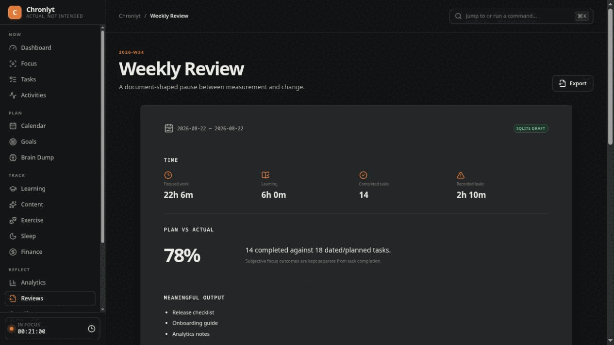
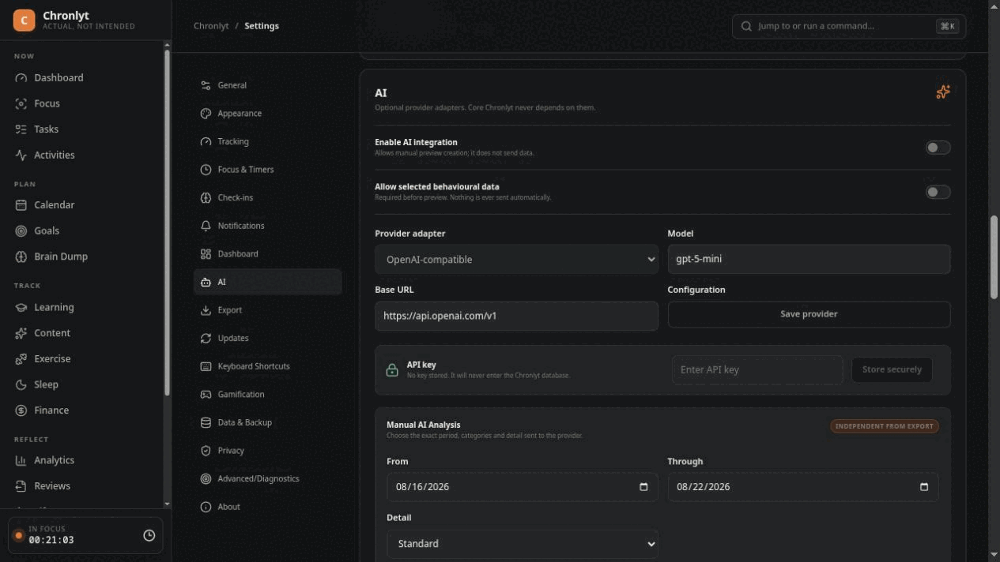

Plans meet reality
Keep Tasks, Activities, Brain Dump items, Goals and life categories connected in one local system.
Connect plans, focused work, real activity and outcomes. Understand what actually happened without giving up ownership of your personal data.
Chronlyt is currently pre-stable. Features and data formats may change before version 1.0.

Chronlyt connects intentions with real activity so you can see where your attention went, what was completed and what repeatedly got in the way.
Keep Tasks, Activities, Brain Dump items, Goals and life categories connected in one local system.
Run focused work sessions with timestamps, pause recovery and completion notes grounded in what actually happened.
Compare plans against reality using Analytics, Statistics and Weekly Reviews instead of relying on memory.
Find recurring patterns, identify friction and choose what to change next without turning subjective life data into fake precision.
Chronlyt is designed around the full loop: decide what matters, work on it, record what happened and use the result to improve the next cycle.
Start a Focus Session around something concrete, keep track of interruptions and finish with a record of what was actually produced.

Analytics connects your sessions, tasks and activity history so you can see where time went and how behaviour changes across days and weeks.

Weekly Reviews help turn a week of activity into a useful reflection: what worked, what changed, what failed and what should happen next.

Chronlyt is designed around local ownership instead of turning personal productivity data into another cloud analytics stream.
Core application data is stored locally in SQLite on your device.
Chronlyt does not include developer analytics SDKs or automatic behavioural-data uploads.
Core tracking, reflection, backup and export features work without a Chronlyt account.
Export your own data locally without requiring an AI provider or cloud service.
AI Analysis is optional. You choose the provider, time period, categories and level of detail before anything is sent.
Select which categories and period should be included.
Inspect the information included in the request before submission.
Nothing is submitted to an AI provider until you confirm it.

Your core Chronlyt history is stored on your own device.
Create backups that remain under your control.
Export information in open, readable formats such as Markdown and JSON.
Network-dependent features are separated from the core local workflow.
No. Core Chronlyt functionality is designed to work without an account. Accounts are optional and are used for supported identity and future device-related features.
No. Behavioural and productivity data is stored locally by default and is not automatically uploaded.
No. AI Analysis is optional and requires explicit configuration and confirmation before a request is sent.
Core application data is stored locally on your device using SQLite. Exports and backups are also created locally.
No. Chronlyt is proprietary, closed-source software. This public repository contains documentation, release information and public project resources, not the application source code.
Yes. Chronlyt supports local export workflows designed to keep your information portable and under your control.
Download the latest release for your platform from GitHub Releases.
Windows packages may display a SmartScreen reputation warning while releases are not Authenticode-signed.